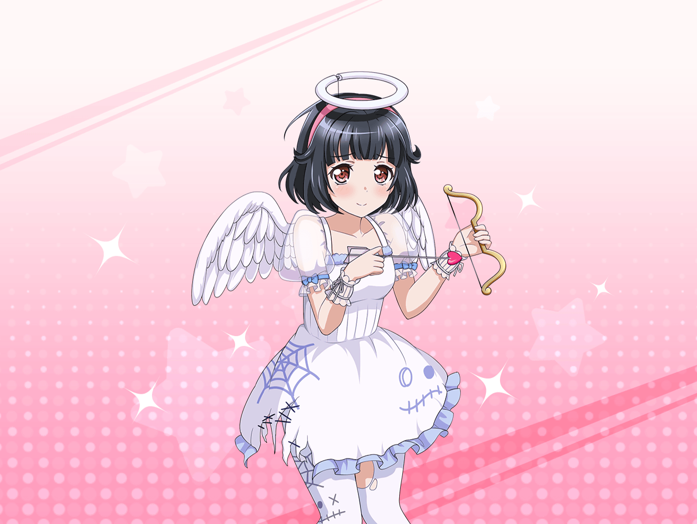

花咲川女子学園 １－A教室
りみ
おはよう、沙綾ちゃん
沙綾
りみりん、おはよう。
昨日のハロウィン、一緒に参加できなくてごめんね。
大丈夫だった？
りみ
うん！
めっちゃ楽しかったよ！
沙綾
そっか。それならよかった。
私が頼んだ助っ人さんはどうだった？
りみ
とーってもかっこいい人だった！
驚いちゃった、沙綾ちゃんが
あんなに素敵な人と知り合いだったなんて！
沙綾
（あ、この反応……
りみりん、やっぱりあれが薫さんだって気が付いてないんだ）
りみ
沙綾ちゃんが頼んでくれた助っ人さん、
怪盗の格好をしてたんだけど、
それがすごく似合ってて……
りみ
それに、すごく優しくて、
お菓子をもらうときの『トリックオアトリート』っていう
言葉の発声練習にも付き合ってくれたんだよ
りみ
そのおかげで私、ちゃんと言えるようになって、
お菓子もたくさんもらえたんだ
沙綾
へえ、すごいじゃん。
よかったね、りみりん♪
りみ
うん、ちょっと緊張したけどね。
でも怪盗さんがパートナーだから
ちゃんとできたんだと思う
りみ
全ては怪盗さんのおかげだよ
りみ
……あ。
だけど、結局最後の最後まで
仮面を外してくれなかったのは残念だったな～
沙綾
そっか。
まあ、とにかくりみりんが楽しんでくれたなら良かった
りみ
あ、でもね……
あの怪盗さん、知ってる人じゃないかなって
思ったんだ
沙綾
そうなの？
どうして？
りみ
話し方とか、雰囲気とか……
誰だかは思い出せないんだけど……
りみ
どこかで会ったような
気がするんだよね……
沙綾
そ、そうなんだ……
りみ
沙綾ちゃん……
あの怪盗さんって一体誰なのかな？
沙綾
あー……えーっと……
沙綾
（言っちゃまずいよね……
正体を隠すっていう約束で
助っ人になってもらったわけだし……）
沙綾
（しっかし正体を隠す理由が
『怪盗と信じた人の、夢を壊したくない』
なんて、薫さんらしいよねー）
りみ
ねえ、沙綾ちゃん、誰だか教えてよ。
誰だかわかんなくてモヤモヤするよ～
沙綾
ん～、でも本人たっての希望で
教えられないんだよね
沙綾
怪盗は怪盗のままで
いたいんだって
りみ
そうなの……？
な、なんか素敵な理由だね
沙綾
……ってことで、
怪盗さんの希望に沿って
正体は秘密ってことで
りみ
そっか、そういうことなら
仕方ないよね
りみ
わかった！
私もこれ以上、詮索するのをやめるね
沙綾
ありがとう、りみりん
りみ
ううん、気にしないで
りみ
でも、そうやって最後の最後まで
怪盗でいようとするなんて
ホントにかっこいいなー！
沙綾
ふふ、謎は謎のままにしておくのも、
なかなか悪くないかもよ
沙綾
だって、あの怪盗が誰かわからなくても、
りみりんはハロウィンイベント楽しめたわけだからね
りみ
うん！
そうだね！
沙綾
なら、楽しい思い出としてとっておこうよ
りみ
うん、そうする！
ああ、でももし会えるなら……
また、会いたいなぁ
沙綾
（ふふ……きっと会えると思うよ。
意外とすぐに……ね）